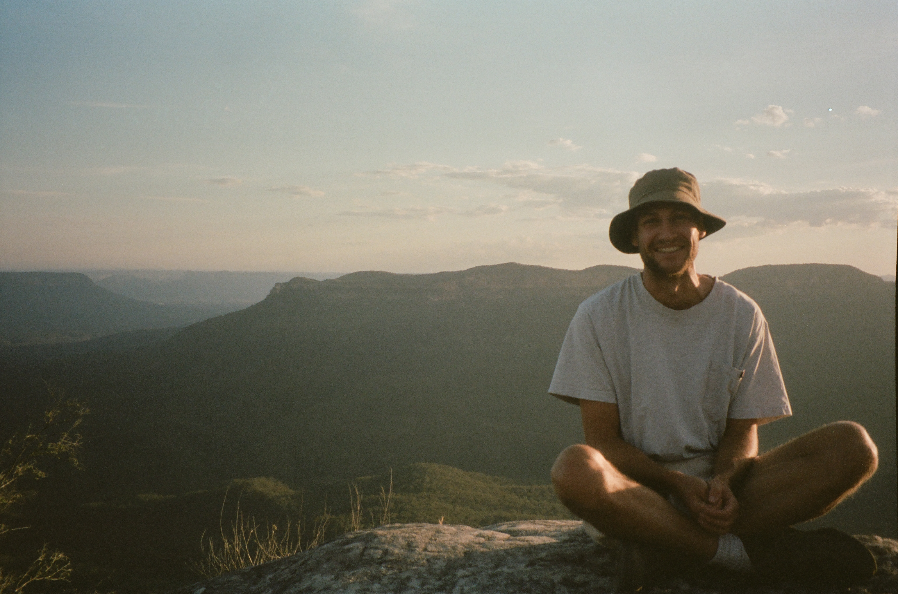

Liam Turner_
I'm an Animation / AI programmer working on games and tools in Unreal and custom engines. This is just a little hub for some of my faviourte projects I've made along with a selection of the games and tools I've worked on. Hope you find it interseting and play some of it :)
Projects
Movement Shooter Navmesh
Fully Custom Navmesh / Path finding system for enemy AI
feeling a little hard done by with unreals implementation of Recast/Detour I set out to build a system for AI to traverse complex 3D spaces by utilizing movement mechanics you would find in a 3rd person movement shooter, without any reliance on navlinks or unerlying Unreal Engine systems
DemoRead moreShow less
Built as an internal tool for iterating on a movement shooter's navmesh, this viewer scrubs through captured animation frames alongside the mesh data so traversal edges and drop-offs can be checked without booting the full game. It grew out of needing fast turnaround on retargeting fixes: load a clip, spot the foot-sliding or clipping issue, patch it, reload — no editor restart required.
// Check if target changed
if (IsMouseButtonDown(MOUSE_RIGHT_BUTTON))
{
if (g != GetMousePosition().y)
{
// Update Target
g = GetMousePosition().y;
// Solve for smoothstep parameters `s` and `t`
smoothstep_solve(et, es, g - x, smoothstep_dt(et, es));
// Set the offset to the difference between the target and current eased value
eo = x - smoothstep(et, es);
}
}
// Update the easing time
et += dt / max(blendtime, 1e-4f);
// Update the eased value
x = eo + smoothstep(et, es);
// Update Time
t += dt;
Potion
An animation framwork wrtien in C++ OpenGL using state machines and ML
Recently I've been doing alot of experimentation with 3rd gameplay mechanics so I decided it was time to finally create some base framework fo which to build these ideas of instead of having to make it from scratch every time.... So I made potion. A capsule movement / Animation system for humanoid bipeds that I tried to make as compatible with what ever engine architure I had in mind for that week'
DemoRead moreShow less
Loam parses a small config DSL into a typed tree with real error locations instead of a generic "invalid syntax" message. It started as a way to avoid pulling in a full serialization framework for tools that only ever need a handful of settings, and the combinator approach made it easy to add new field types without touching the core parser.
Game Prototype
A movement shooter concept
why make all these things if you dont make a game with them? well I tried to solve that by thinking of a game concept that combined all of the things I had been working on and instead of subjecting would be players to some of my programmer art I used some assets from one of my favioute games
Demo avalibe soonRead moreShow less
Fieldnotes reads a flat folder of dated Markdown files and turns them into a browsable log with almost nothing to set up — no themes to pick, no plugins to install, no build pipeline to babysit. It exists because every other static-site generator felt like overkill for what is, in practice, a running list of entries in date order.
Work
Narrative Pro
Unreal engie plugin
LinkRead moreShow less
A loose grab-bag of one-off shader and procgen experiments that never grew into anything bigger than a single file: raymarched noise fields, a couple of terrain erosion sketches, an attempt at cloud rendering that got shelved. Kept together here mostly so they don't get lost in random folders.
About
I'm a software engineer focused on animation systems, tooling and the occasional weird side project. Most of my work sits somewhere between graphics programming and developer tooling — things that make other people's work faster or their output look better.

Previously at a couple of studios you've probably heard of. Based in Sydney, usually awake at odd hours debugging something that only breaks on Tuesdays.
C++ · Python · Rust · OpenGL · Animation Systems · Tooling